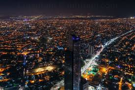
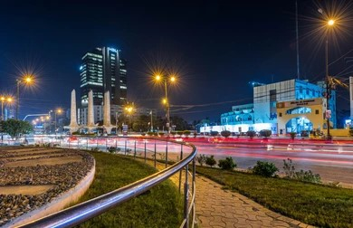

Karachi is the largest city of Pakistan and the capital of Sindh province. Situated along the Arabian Sea, it serves as the nation’s primary seaport and financial center. From a small fishing village to a global megacity, Karachi drives Pakistan’s economy, commerce, and industry while connecting the country with the world.
Known as the “City of Lights,” Karachi never sleeps. Its streets, food markets, shopping centers, beaches, and cultural hubs are vibrant from dawn to midnight, reflecting the city’s energy, diversity, and resilient spirit.
With over 20 million residents, Karachi is a mosaic of languages, cultures, and traditions. Skyscrapers rise beside historic buildings, modern malls stand alongside local bazaars, and the city continues to thrive as a center of opportunity, ambition, and innovation.
Every honking horn, bustling street, and coastal wave adds to Karachi’s heartbeat. It is alive with dreams, ambitions, and stories of millions. The “pulse” symbolizes not only the city’s energy, but also its cultural richness and the unstoppable spirit of its people.